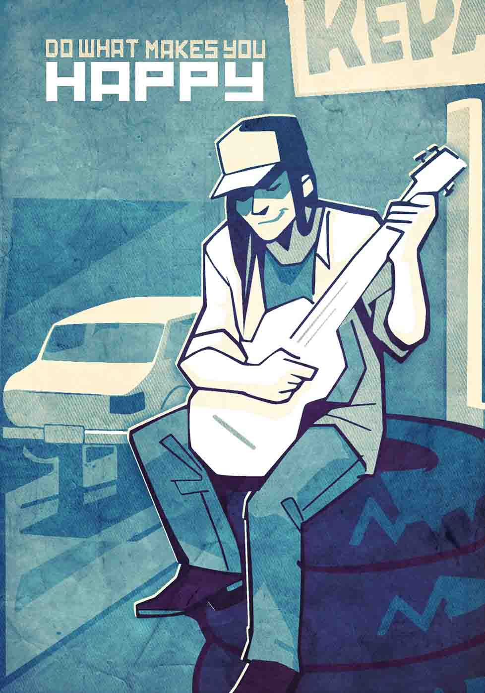

Well-being is associated with long-term health and survival: happier people live longer and better.
Strong relationships — friends, family, or romance — are essential to feeling good about life.
Optimism at work increases productivity, creativity, and engagement.
50% of happiness is genetic, 10% is circumstantial, and 40% is a result of our own intentional activity. That's a big margin. Take a risk, find what matters to your, and incorporate it into your work or life. 